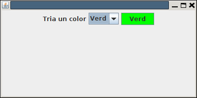

4.6.- JComboBox
La llista desplegable, o quadre combinat (combinació d'un quadre de text i un llista) és un component molt útil per a seleccionar una entre moltes opcions que es poden mostrar en la llista desplegable associada al component.
La única dificultat radica en omplir aquesta llista. Una de les maneres és omplir-la passant-li la llista en un Array de Strings en el moment de crear el JComboBox
String[] llista = {"Opció 1", "Opció 2", "Opció 3", "Opció 4"}
JComboBox combo = new JComboBox(llista);
Una forma alternativa seria crear primer el JComboBox i després anar afegint elements amb el mètode addItem(). El mateix exemple d'abans quedaria:
JComboBox combo = new JComboBox();
combo.addItem("Opció 1");
combo.addItem("Opció 2");
combo.addItem("Opció 3");
combo.addItem("Opció 4");
Per a registrar l'acció de quan seleccionem un element de la llista, com sempre registrarem l'element (en aqeust cas JComboBox) amb el m'etode addListener(). Posteriorment en el mètode actionPerformed() ens preguntarem si el component que ha provocat l'acció ha estat el JComboBox. Normalment haurem de saber quin és l'element de la llista seleccionat, que sabrem amb getSelectedItem().
En el següent exemple mostrem un quadre combinat amb 4 opcions corresponents a 4 colors. Quan es tria un color, canviem el color de fons d'un botó situat al costat.
import java.awt.Color;
import java.awt.FlowLayout;
import java.awt.event.ActionEvent;
import java.awt.event.ActionListener;
import javax.swing.JButton;
import javax.swing.JComboBox;
import javax.swing.JFrame;
import javax.swing.JLabel;
public class Finestra extends JFrame implements ActionListener{
JComboBox combo;
JButton boto1;
public void iniciar(){
setSize(400,200);
getContentPane().setLayout(new FlowLayout());
getContentPane().add(new JLabel("Tria un color"));
String [] llista = {"Roig","Blau","Verd","Groc"};
combo = new JComboBox(llista);
getContentPane().add(combo);
boto1 = new JButton("Color");
getContentPane().add(boto1);
this.setDefaultCloseOperation(JFrame.EXIT_ON_CLOSE);
setVisible(true);
combo.addActionListener(this);
combo.setSelectedIndex(0);
}
@Override
public void actionPerformed(ActionEvent e) {
if (e.getSource()==combo){
boto1.setText(combo.getSelectedItem().toString());
switch (combo.getSelectedIndex()){
case 0: boto1.setBackground(Color.red);
break;
case 1: boto1.setBackground(Color.blue);
break;
case 2: boto1.setBackground(Color.GREEN);
break;
case 3: boto1.setBackground(Color.yellow);
break;
}
}
}
}

Llicenciat sota la Llicència Creative Commons Reconeixement NoComercial SenseObraDerivada 2.5